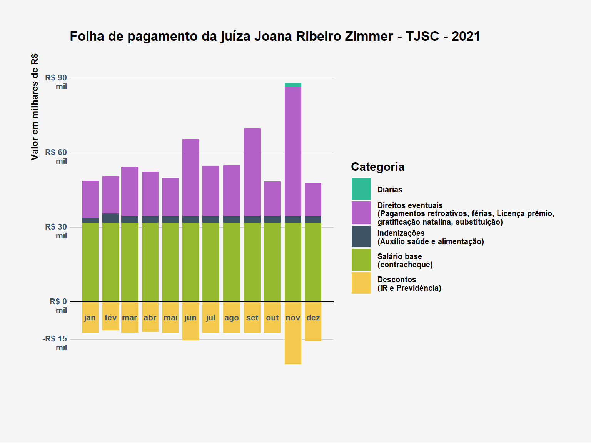
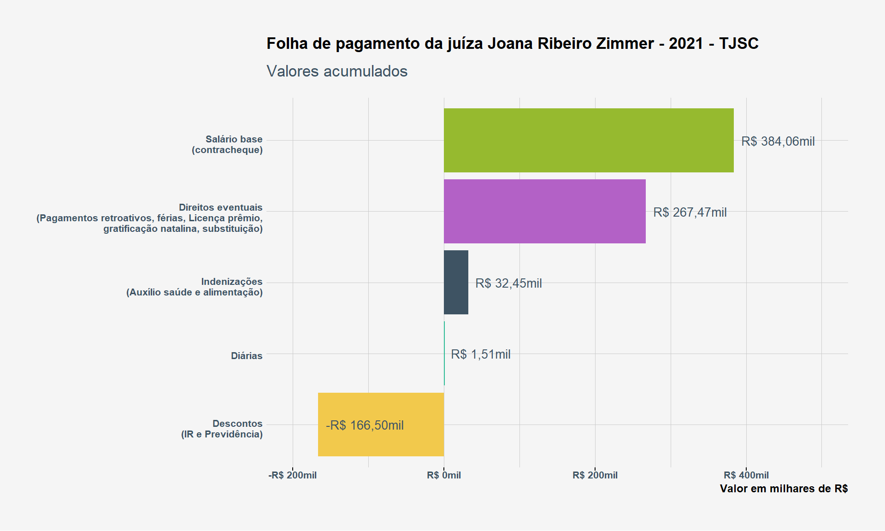

library(tidyverse)library(frictionless)library(here)# peguei as cores do site e criei um vetor com nomes fáceis de lembrarcores_dadosjusbr<-c(
lilas ="#B361C6",
cyan ="#2FBB96",
cinza_azulado ="#3e5363",
verde ="#96ba2f",
laranja ="#F2C94C",
cinza_claro ="#F5F5F5")hrbrthemes::import_roboto_condensed()extrafont::loadfonts()theme_set(hrbrthemes::theme_ipsum_rc()+theme(
axis.ticks.x =element_line(),
plot.title =element_text(color ="black", face ="bold", size =13),
plot.subtitle =element_text(color =cores_dadosjusbr[["cinza_azulado"]]),
plot.background =element_rect(fill =cores_dadosjusbr[["cinza_claro"]], color ="transparent"),
axis.text.x =element_text(color =cores_dadosjusbr[["cinza_azulado"]], size =8, face ="bold"),
axis.text.y =element_text(color =cores_dadosjusbr[["cinza_azulado"]], face ="bold"),
axis.title.x =element_text(color ="black", face ="bold"),
axis.title.y =element_text(color ="black", face ="bold"),
legend.text =element_text(color ="black", face ="bold"),
legend.title =element_text(color ="black", face ="bold"),
strip.text =element_text(color =cores_dadosjusbr[["cinza_azulado"]], face ="bold"),
panel.background =element_blank(),
text =element_text(family ="Roboto Condensed")))hrbrthemes::update_geom_font_defaults(color =cores_dadosjusbr[["cinza_azulado"]],
family ="Roboto Condensed")# read from zipread_dadosjus<-function(pkgURL, myDir){pkgDest<-str_extract(pkgURL, "(?<=datapackage\\/).*")pkgDir<-str_remove(pkgDest, "\\/.*$")pkgDest<-here(myDir, pkgDest)pkgDir<-here(myDir, pkgDir)dir.create(pkgDir, recursive =TRUE)message(str_glue("get {pkgURL}\n\n"))download.file(pkgURL, mode ="wb", destfile =pkgDest)Sys.sleep(2)message(str_glue("unzip {pkgDest} to {pkgDir}\n\n"))unzip(pkgDest, exdir =pkgDir)Sys.sleep(2)# leitura do pacotemessage("read DadosJusBr datapackage\n")package<-frictionless::read_package(here(pkgDir, 'datapackage.json'))unlink(here("R/data"), recursive =TRUE)return(package)}# URL packagepkgURL<-"https://dadosjusbr.org/download/datapackage/tjsc/tjsc-2021.zip"# read datapackagedatapackage_tjsc<-read_dadosjus(pkgURL =pkgURL, myDir ="data/pacotes")# read-remuneracaoremuneracao<-datapackage_tjsc%>%frictionless::read_resource("remuneracao")%>%filter(!is.na(valor))# read-contra_chequecontra_cheque<-datapackage_tjsc%>%frictionless::read_resource("contra_cheque")%>%filter(!is.na(ativo))# read-base_tjscleft_join<-tidylog::left_joinbase_tjsc<-left_join(remuneracao, contra_cheque)%>%mutate(data =lubridate::dmy(str_replace(chave_coleta, "tjsc", "01")))%>%select(data, natureza, categoria, item, nome, valor)
Objetivo da análise
O objetivo desta análise é fazer um levantamento dos rendimentos da juíza Joana Ribeiro Zimmer do Tribunal de Justiça de Santa Catarina. A juíza ficou conhecida por impedir o aborto legal de uma criança que sofreu violência sexual e estava com 22 semanas de gestação. O caso foi revelado por uma matéria do The Intercept Brasil.
Dados
Os dados são do próprio TJSC e foram disponibilizados de forma estruturada para análise pelo projeto DadosJusBr, que é realizado pela Transparência Brasil em parceria com o Instituto Federal de Alagoas e a Universidade Federal de Campina Grande.
O DadosJusBr é uma plataforma que recupera, padroniza e publica como dado aberto continuamente os dados dos órgãos do sistema de justiça brasileiro. Até maio de 2022 foram publicados dados mensais de salários, indenizações, gratificações e diárias de 54 órgãos. Para essa análise foram extraídos os dados do Tribunal de Justiça de Santa Catarina para o ano de 2021.
Como o TJSC não disponibiliza dados de matrícula, a busca pelos dados da Joana Ribeiro Zimmer foi feita pelo seu nome, especificado nos dados como JOANA RIBEIRO. A relação completa dos nomes dos magistrados está disponível no final deste relatório
Código
# filtrando por magistradas que contenham "JOANA" no primeiro nomebase_tjsc%>%filter(str_detect(nome, "JOANA"))%>%distinct(nome)#> # A tibble: 1 × 1#> nome #> <chr> #> 1 JOANA RIBEIRO
Rendimentos líquidos
Em média, a juíza recebebeu R$ 43.249,32. Valor acima do teto remuneratório de R$ 39.293,32.
Código
reais_mil<-function(x)scales::dollar(x/1e3, decimal.mark =",", big.mark =" ", prefix ="R$ ", suffix ="\nmil")reais<-function(x)scales::dollar(x, decimal.mark =",", big.mark =" ", prefix ="R$ ")base_tjsc%>%filter(nome=="JOANA RIBEIRO")%>%group_by(data)%>%summarise(valor =sum(valor), .groups ="drop")%>%group_by()%>%mutate(valor_medio =mean(valor))%>%ungroup()%>%ggplot(aes(x =data, y =valor))+geom_label(aes(y =valor_medio, x =as.Date("2021-12-01"), label ="Média"),
vjust =.5, hjust =-3, size =3.5, label.size =NA, fill =cores_dadosjusbr[["cinza_claro"]])+geom_col(fill =cores_dadosjusbr[["lilas"]])+geom_text(aes(label =reais_mil(valor)),
fontface ="bold",
size =2.3,
vjust =1,
color =cores_dadosjusbr[["cinza_claro"]])+scale_y_continuous(expand =c(0, 0), breaks =c(0, 39293.32, 43249.32, 6e4),
labels =c("R$ 0,00", "Teto remuneratório\nR$ 39,2mil", "Média\nR$ 43,2mil", "R$ 60 000"))+scale_x_date(date_breaks ="month", date_labels ="%b")+labs(
title ="Recebimento líquido de Joana Ribeiro Zimmer no TJSC (2021)",
y =NULL,
x =NULL,
caption ="Valores com dedução de Imposto de Renda, Previdência, e outros descontos na folha de pagamento.")+theme(axis.text.y =element_text(size =8, vjust =.7),
panel.grid.major.x =element_blank(),
panel.grid.minor.x =element_blank(),
panel.grid.minor.y =element_blank())
Rendimentos e descontos por categorias
O salário-base da juíza é fixado em R$32 mil reais. No grupo de indenizações, os ganhos são relativos ao auxílio saúde (R$1.556 por mês) e ao auxílio alimentação (R$1.160 por mês).
Na rubrica de direitos eventuais, os ganhos com gratificação natalina (incluíndo antecipação) somaram R$ 54.527 e foram pagos em uma parcela de R$ 17.722 em abril e R$36.805 em novembro de 2021.
Código
diarias<-"Diárias"direitos_eventuais<-"Direitos eventuais\n(Pagamentos retroativos, férias,\nLicença prêmio, gratificação natalina,\nantecipação de gratificação natalina,\nsubstituição)"indenizacoes<-"Indenizações\n(Auxílio saúde e alimentação)"contracheque<-"Salário base\n(contracheque)"descontos<-"Descontos\n(IR e Previdência)"lbls<-c(diarias, direitos_eventuais, indenizacoes, contracheque, descontos)paleta<-c(cores_dadosjusbr[["cyan"]],
cores_dadosjusbr[["lilas"]],
cores_dadosjusbr[["cinza_azulado"]],
cores_dadosjusbr[["verde"]],
cores_dadosjusbr[["laranja"]])names(paleta)<-lblsbase_tjsc%>%filter(nome=="JOANA RIBEIRO")%>%filter(categoria!="direitos-pessoais")%>%mutate(
catg =case_when(natureza=="D"~descontos,
item=="Diárias"~diarias,
categoria=="indenizações"~indenizacoes,
categoria=="direitos-eventuais"~direitos_eventuais,
TRUE~contracheque)%>%ordered(levels =lbls))%>%ggplot(aes(y =valor, x =data, fill =catg))+geom_col()+geom_hline(yintercept =0)+theme(
axis.text.y =element_text(size =8, vjust =.7),
axis.text.x =element_text(size =8, vjust =60),
axis.ticks.x =element_blank(),
legend.key.width =unit(.7, "cm"),
legend.key.height =unit(.8, "cm"),
legend.text =element_text(size =7.5),
panel.grid.major.x =element_blank(),
panel.grid.minor.x =element_blank(),
panel.grid.minor.y =element_blank())+scale_fill_manual(
values =paleta,
guide =guide_legend(ncol =1))+scale_y_continuous(expand =c(0, 0), label =reais_mil, breaks =c(-15e3, 0, 3e4, 6e4, 9e4), limits =c(-4e4, 1e5))+scale_x_date(date_breaks ="month", date_labels ="%b")+labs(
title ="Folha de pagamento da juíza Joana Ribeiro Zimmer",
fill ="Categoria",
y ="Valor em milhares de R$",
x =NULL)

Outra rubrica que garantiu altos ganhos para a magistrada foi a referente aos pagamentos retroativos, da catgoria de direitos eventuais:
Código
base_tjsc%>%filter(nome=="JOANA RIBEIRO")%>%filter(item=="Pagamentos retroativos")%>%group_by(data, item)%>%summarise(valor =sum(valor))%>%ggplot(aes(x =data, y =valor, fill =item))+geom_line(color =cores_dadosjusbr[["cinza_azulado"]])+geom_area(fill =cores_dadosjusbr[["cyan"]], alpha =.7)+geom_text(aes(label =reais_mil(valor)), color =cores_dadosjusbr[["cinza_azulado"]], fontface ="bold", vjust =-.1)+scale_y_continuous(labels =reais_mil)+scale_x_date(date_breaks ="month", date_labels ="%b")+labs(
title ="Pagamentos retroativos - direitos eventuais",
subtitle ="Juíza Joana Ribeiro Zimmer (TJSC)",
y ="Valor em R$",
x =NULL)+theme(
panel.grid.minor.x =element_blank())

Média dos rendimentos mensais
Código
base_tjsc%>%count(data, categoria, nome, wt =valor, name ="valor")%>%group_by(categoria, nome)%>%summarise(valor =mean(valor), .groups ="drop")%>%mutate(is_joana_ribeiro_zimmer =if_else(nome=="JOANA RIBEIRO", "JOANA RIBEIRO", "Demais magistrados (TJSC)"),
categoria =str_to_title(categoria))%>%ggplot(aes(y =reorder(categoria, valor), x =valor, color =is_joana_ribeiro_zimmer))+ggbeeswarm::geom_quasirandom(groupOnX =FALSE, size =3)+scale_color_manual(values =cores_dadosjusbr[["lilas"]])+gghighlight::gghighlight(is_joana_ribeiro_zimmer=="JOANA RIBEIRO",
unhighlighted_colour =alpha(cores_dadosjusbr[["cyan"]], .15),
label_params =list(size =3,
label.padding =unit(0.01, "lines"),
label.size =NA, fill ="transparent", hjust =0.5, vjust =0, color =cores_dadosjusbr[["cinza_azulado"]]))+scale_x_continuous(label =scales::number)+labs(
title ="Média dos rendimentos mensais dos membros do TJSC - 2021",
x ="Valor em R$",
y =NULL,
caption ="Cada ponto é a média de pagamentos mensais feito para um membro em 2021")
Rendimentos mensais
Código
base_tjsc%>%count(data, categoria, nome, wt =valor, name ="valor")%>%group_by(data, categoria, nome)%>%summarise(valor =mean(valor), .groups ="drop")%>%mutate(is_joana_ribeiro_zimmer =if_else(nome=="JOANA RIBEIRO", "JOANA RIBEIRO", "Demais magistrados (TJSC)"),
categoria =str_to_title(categoria))%>%ggplot(aes(y =reorder(categoria, valor), x =valor, color =is_joana_ribeiro_zimmer))+ggbeeswarm::geom_quasirandom(groupOnX =FALSE, size =2)+scale_color_manual(values =cores_dadosjusbr[["lilas"]])+gghighlight::gghighlight(is_joana_ribeiro_zimmer=="JOANA RIBEIRO",
unhighlighted_colour =alpha(cores_dadosjusbr[["cyan"]], .15),
label_params =list(size =3,
label.padding =unit(0.01, "lines"),
label.size =NA, fill ="transparent", hjust =0.5, vjust =0, color =cores_dadosjusbr[["cinza_azulado"]]))+geom_text(data =.%>%filter(categoria=="Direitos-Eventuais", lubridate::month(data)==11),
color =cores_dadosjusbr[["cinza_azulado"]],
aes(label =nome), size =2.5, vjust =1)+scale_x_continuous(label =scales::number)+labs(
title ="Rendimentos mensais dos membros do TJSC - 2021",
x ="Valor em R$",
y =NULL,
caption ="Cada ponto é um pagamento mensal feito para um membro em 2021")
Distribuição dos rendimentos dos membros do TJSC por item da categoria
Código
plot_rendimentos<-function(df, categ){cor_pontos<-case_when(categ=="Direitos-Eventuais"~cores_dadosjusbr[["cyan"]],
categ=="Indenizações"~cores_dadosjusbr[["laranja"]],
categ=="Contracheque"~cores_dadosjusbr[["verde"]],
categ=="Direitos-Pessoais"~cores_dadosjusbr[["cinza_azulado"]])size_categ<-case_when(categ=="Direitos-Eventuais"~1.5,
categ=="Indenizações"~2,
categ=="Contracheque"~1.7,
categ=="Direitos-Pessoais"~2)df%>%mutate(categoria =str_to_title(categoria))%>%filter(categoria==categ)%>%count(data, categoria, item, nome, wt =valor, name ="valor")%>%group_by(data, categoria, item, nome)%>%summarise(valor =mean(valor), .groups ="drop")%>%mutate(is_joana_ribeiro_zimmer =if_else(nome=="JOANA RIBEIRO", "JOANA RIBEIRO", "Demais magistrados (TJSC)"))%>%ggplot(aes(y =reorder(item, valor), x =valor, color =is_joana_ribeiro_zimmer))+ggbeeswarm::geom_quasirandom(groupOnX =FALSE, size =size_categ)+scale_color_manual(values =cores_dadosjusbr[["lilas"]])+gghighlight::gghighlight(is_joana_ribeiro_zimmer=="JOANA RIBEIRO",
unhighlighted_colour =alpha(cor_pontos, .15), use_direct_label =FALSE,
label_params =list(size =3,
label.padding =unit(0.01, "lines"),
label.size =NA, fill ="transparent", hjust =0.5, vjust =0,
color =cores_dadosjusbr[["cinza_azulado"]]))+scale_x_continuous(label =scales::number)+labs(
title =str_glue("Rendimentos mensais na categoria {categ}"),
subtitle ="Membros do TJSC - 2021",
x ="Valor em R$",
y =NULL,
caption ="Cada ponto é um pagamento mensal feito para um membro em 2021",
color =NULL)+theme(legend.position ="bottom", legend.justification ="right")}
---title: "Quanto ganha a juíza de SC que impediu uma criança de realizar um procedimento de aborto legal?"format: html: toc: true code-fold: true code-tools: true code-link: true code-summary: "Código" toc-title: "Índice"---```{r setup, include=FALSE}knitr::opts_chunk$set(echo =TRUE, warning =FALSE, message =FALSE, collapse =TRUE, comment ="#>",fig.width =8, fig.height =6)``````{r}#| label: libslibrary(tidyverse)library(frictionless)library(here)# peguei as cores do site e criei um vetor com nomes fáceis de lembrarcores_dadosjusbr <-c(lilas ="#B361C6",cyan ="#2FBB96",cinza_azulado ="#3e5363",verde ="#96ba2f",laranja ="#F2C94C",cinza_claro ="#F5F5F5")hrbrthemes::import_roboto_condensed()extrafont::loadfonts()theme_set( hrbrthemes::theme_ipsum_rc() +theme(axis.ticks.x =element_line(),plot.title =element_text(color ="black", face ="bold", size =13),plot.subtitle =element_text(color = cores_dadosjusbr[["cinza_azulado"]]),plot.background =element_rect(fill = cores_dadosjusbr[["cinza_claro"]], color ="transparent"),axis.text.x =element_text(color = cores_dadosjusbr[["cinza_azulado"]], size =8, face ="bold"),axis.text.y =element_text(color = cores_dadosjusbr[["cinza_azulado"]], face ="bold"),axis.title.x =element_text(color ="black", face ="bold"),axis.title.y =element_text(color ="black", face ="bold"),legend.text =element_text(color ="black", face ="bold"),legend.title =element_text(color ="black", face ="bold"),strip.text =element_text(color = cores_dadosjusbr[["cinza_azulado"]], face ="bold"),panel.background =element_blank(),text =element_text(family ="Roboto Condensed") ))hrbrthemes::update_geom_font_defaults(color = cores_dadosjusbr[["cinza_azulado"]], family ="Roboto Condensed")# read from zipread_dadosjus <-function(pkgURL, myDir) { pkgDest <-str_extract(pkgURL, "(?<=datapackage\\/).*") pkgDir <-str_remove(pkgDest, "\\/.*$") pkgDest <-here(myDir, pkgDest) pkgDir <-here(myDir, pkgDir)dir.create(pkgDir, recursive =TRUE)message(str_glue("get {pkgURL}\n\n"))download.file(pkgURL, mode ="wb", destfile = pkgDest)Sys.sleep(2)message(str_glue("unzip {pkgDest} to {pkgDir}\n\n"))unzip(pkgDest, exdir = pkgDir)Sys.sleep(2)# leitura do pacotemessage("read DadosJusBr datapackage\n") package <- frictionless::read_package(here(pkgDir, 'datapackage.json'))unlink(here("R/data"), recursive =TRUE)return(package)}# URL packagepkgURL <-"https://dadosjusbr.org/download/datapackage/tjsc/tjsc-2021.zip"# read datapackagedatapackage_tjsc <-read_dadosjus(pkgURL = pkgURL, myDir ="data/pacotes")# read-remuneracaoremuneracao <- datapackage_tjsc %>% frictionless::read_resource("remuneracao") %>%filter(!is.na(valor))# read-contra_chequecontra_cheque <- datapackage_tjsc %>% frictionless::read_resource("contra_cheque") %>%filter(!is.na(ativo))# read-base_tjscleft_join <- tidylog::left_joinbase_tjsc <-left_join(remuneracao, contra_cheque) %>%mutate(data = lubridate::dmy(str_replace(chave_coleta, "tjsc", "01"))) %>%select(data, natureza, categoria, item, nome, valor)```### Objetivo da análiseO objetivo desta análise é fazer um levantamento dos rendimentos da juíza [Joana Ribeiro Zimmer](https://g1.globo.com/sc/santa-catarina/noticia/2022/06/22/quem-e-joana-ribeiro-zimmer-juiza-que-impediu-o-aborto-de-uma-menina-de-11-anos-que-foi-estuprada.ghtml) do Tribunal de Justiça de Santa Catarina. A juíza ficou conhecida por impedir o aborto legal de uma criança que sofreu violência sexual e estava com 22 semanas de gestação. O caso foi revelado por uma [matéria do The Intercept Brasil](https://theintercept.com/2022/06/20/video-juiza-sc-menina-11-anos-estupro-aborto/).### DadosOs dados são do próprio TJSC e foram disponibilizados de forma estruturada para análise pelo projeto [DadosJusBr](https://dadosjusbr.org/), que é realizado pela Transparência Brasil em parceria com o Instituto Federal de Alagoas e a Universidade Federal de Campina Grande.O [DadosJusBr](https://dadosjusbr.org/) é uma plataforma que recupera, padroniza e publica como dado aberto continuamente os dados dos órgãos do sistema de justiça brasileiro. Até maio de 2022 foram publicados dados mensais de salários, indenizações, gratificações e diárias de 54 órgãos. Para essa análise foram extraídos os [dados do **Tribunal de Justiça de Santa Catarina** para o ano de 2021](https://dadosjusbr.org/download/datapackage/tjsc/tjsc-2021.zip).Como o TJSC não disponibiliza dados de matrícula, a busca pelos dados da Joana Ribeiro Zimmer foi feita pelo seu nome, especificado nos dados como `JOANA RIBEIRO`. A relação completa dos nomes dos magistrados está [disponível no final deste relatório](http://localhost:7034/?capabilities=1&host=http%3A%2F%2F127.0.0.1%3A63588#rela%C3%A7%C3%A3o-de-nomes-de-magistrados-do-tjsc)```{r}#| label: detect-joana-ribeiro-zimmer# filtrando por magistradas que contenham "JOANA" no primeiro nomebase_tjsc %>%filter(str_detect(nome, "JOANA")) %>%distinct(nome)```### Rendimentos líquidos Em média, a juíza recebebeu R\$ 43.249,32. Valor acima do teto remuneratório de R\$ 39.293,32.```{r}reais_mil <-function(x) scales::dollar(x/1e3, decimal.mark =",", big.mark =" ", prefix ="R$ ", suffix ="\nmil")reais <-function(x) scales::dollar(x, decimal.mark =",", big.mark =" ", prefix ="R$ ")base_tjsc %>%filter(nome =="JOANA RIBEIRO") %>%group_by(data) %>%summarise(valor =sum(valor), .groups ="drop") %>%group_by() %>%mutate(valor_medio =mean(valor)) %>%ungroup() %>%ggplot(aes(x = data, y = valor)) +geom_label(aes(y = valor_medio, x =as.Date("2021-12-01"), label ="Média"),vjust = .5, hjust =-3, size =3.5, label.size =NA, fill = cores_dadosjusbr[["cinza_claro"]] ) +geom_col(fill = cores_dadosjusbr[["lilas"]]) +geom_text(aes(label =reais_mil(valor)), fontface ="bold",size =2.3,vjust =1,color = cores_dadosjusbr[["cinza_claro"]]) +scale_y_continuous(expand =c(0, 0), breaks =c(0, 39293.32, 43249.32, 6e4),labels =c("R$ 0,00", "Teto remuneratório\nR$ 39,2mil", "Média\nR$ 43,2mil", "R$ 60 000")) +scale_x_date(date_breaks ="month", date_labels ="%b") +labs(title ="Recebimento líquido de Joana Ribeiro Zimmer no TJSC (2021)",y =NULL,x =NULL,caption ="Valores com dedução de Imposto de Renda, Previdência, e outros descontos na folha de pagamento." ) +theme(axis.text.y =element_text(size =8, vjust = .7),panel.grid.major.x =element_blank(),panel.grid.minor.x =element_blank(),panel.grid.minor.y =element_blank())```### Rendimentos e descontos por categoriasO salário-base da juíza é fixado em R$32 mil reais. No grupo de indenizações, os ganhos são relativos ao auxílio saúde (R\$1.556 por mês) e ao auxílio alimentação (R\$1.160 por mês). Na rubrica de direitos eventuais, os ganhos com gratificação natalina (incluíndo antecipação) somaram R\$ 54.527 e foram pagos em uma parcela de R\$ 17.722 em abril e R\$36.805 em novembro de 2021.```{r}diarias <-"Diárias"direitos_eventuais <-"Direitos eventuais\n(Pagamentos retroativos, férias,\nLicença prêmio, gratificação natalina,\nantecipação de gratificação natalina,\nsubstituição)"indenizacoes <-"Indenizações\n(Auxílio saúde e alimentação)"contracheque <-"Salário base\n(contracheque)"descontos <-"Descontos\n(IR e Previdência)"lbls <-c(diarias, direitos_eventuais, indenizacoes, contracheque, descontos)paleta <-c(cores_dadosjusbr[["cyan"]], cores_dadosjusbr[["lilas"]], cores_dadosjusbr[["cinza_azulado"]], cores_dadosjusbr[["verde"]], cores_dadosjusbr[["laranja"]])names(paleta) <- lblsbase_tjsc %>%filter(nome =="JOANA RIBEIRO") %>%filter(categoria !="direitos-pessoais") %>%mutate(catg =case_when( natureza =="D"~ descontos, item =="Diárias"~ diarias, categoria =="indenizações"~ indenizacoes, categoria =="direitos-eventuais"~ direitos_eventuais,TRUE~ contracheque ) %>%ordered(levels = lbls)) %>%ggplot(aes(y = valor, x = data, fill = catg)) +geom_col() +geom_hline(yintercept =0) +theme(axis.text.y =element_text(size =8, vjust = .7),axis.text.x =element_text(size =8, vjust =60),axis.ticks.x =element_blank(),legend.key.width =unit(.7, "cm"),legend.key.height =unit(.8, "cm"),legend.text =element_text(size =7.5),panel.grid.major.x =element_blank(),panel.grid.minor.x =element_blank(),panel.grid.minor.y =element_blank() ) +scale_fill_manual(values = paleta,guide =guide_legend(ncol =1) ) +scale_y_continuous(expand =c(0, 0), label = reais_mil, breaks =c(-15e3, 0, 3e4, 6e4, 9e4), limits =c(-4e4, 1e5)) +scale_x_date(date_breaks ="month", date_labels ="%b") +labs(title ="Folha de pagamento da juíza Joana Ribeiro Zimmer",fill ="Categoria",y ="Valor em milhares de R$",x =NULL )```Outra rubrica que garantiu altos ganhos para a magistrada foi a referente aos pagamentos retroativos, da catgoria de direitos eventuais:```{r}base_tjsc %>%filter(nome =="JOANA RIBEIRO") %>%filter(item =="Pagamentos retroativos") %>%group_by(data, item) %>%summarise(valor =sum(valor)) %>%ggplot(aes(x = data, y = valor, fill = item)) +geom_line(color = cores_dadosjusbr[["cinza_azulado"]]) +geom_area(fill = cores_dadosjusbr[["cyan"]], alpha = .7) +geom_text(aes(label =reais_mil(valor)), color = cores_dadosjusbr[["cinza_azulado"]], fontface ="bold", vjust =-.1) +scale_y_continuous(labels = reais_mil) +scale_x_date(date_breaks ="month", date_labels ="%b") +labs(title ="Pagamentos retroativos - direitos eventuais",subtitle ="Juíza Joana Ribeiro Zimmer (TJSC)",y ="Valor em R$",x =NULL ) +theme(panel.grid.minor.x =element_blank() )```#### Média dos rendimentos mensais```{r}base_tjsc %>%count(data, categoria, nome, wt = valor, name ="valor") %>%group_by(categoria, nome) %>%summarise(valor =mean(valor), .groups ="drop") %>%mutate(is_joana_ribeiro_zimmer =if_else(nome =="JOANA RIBEIRO", "JOANA RIBEIRO", "Demais magistrados (TJSC)"),categoria =str_to_title(categoria)) %>%ggplot(aes(y =reorder(categoria, valor), x = valor, color = is_joana_ribeiro_zimmer)) + ggbeeswarm::geom_quasirandom(groupOnX =FALSE, size =3) +scale_color_manual(values = cores_dadosjusbr[["lilas"]]) + gghighlight::gghighlight( is_joana_ribeiro_zimmer =="JOANA RIBEIRO",unhighlighted_colour =alpha(cores_dadosjusbr[["cyan"]], .15),label_params =list(size =3, label.padding =unit(0.01, "lines"),label.size =NA, fill ="transparent", hjust =0.5, vjust =0, color = cores_dadosjusbr[["cinza_azulado"]]) ) +scale_x_continuous(label = scales::number) +labs(title ="Média dos rendimentos mensais dos membros do TJSC - 2021",x ="Valor em R$",y =NULL,caption ="Cada ponto é a média de pagamentos mensais feito para um membro em 2021" )```#### Rendimentos mensais```{r}base_tjsc %>%count(data, categoria, nome, wt = valor, name ="valor") %>%group_by(data, categoria, nome) %>%summarise(valor =mean(valor), .groups ="drop") %>%mutate(is_joana_ribeiro_zimmer =if_else(nome =="JOANA RIBEIRO", "JOANA RIBEIRO", "Demais magistrados (TJSC)"),categoria =str_to_title(categoria)) %>%ggplot(aes(y =reorder(categoria, valor), x = valor, color = is_joana_ribeiro_zimmer)) + ggbeeswarm::geom_quasirandom(groupOnX =FALSE, size =2) +scale_color_manual(values = cores_dadosjusbr[["lilas"]]) + gghighlight::gghighlight( is_joana_ribeiro_zimmer =="JOANA RIBEIRO",unhighlighted_colour =alpha(cores_dadosjusbr[["cyan"]], .15),label_params =list(size =3, label.padding =unit(0.01, "lines"),label.size =NA, fill ="transparent", hjust =0.5, vjust =0, color = cores_dadosjusbr[["cinza_azulado"]]) ) +geom_text(data = . %>%filter(categoria =="Direitos-Eventuais", lubridate::month(data) ==11),color = cores_dadosjusbr[["cinza_azulado"]],aes(label = nome), size =2.5, vjust =1) +scale_x_continuous(label = scales::number) +labs(title ="Rendimentos mensais dos membros do TJSC - 2021",x ="Valor em R$",y =NULL,caption ="Cada ponto é um pagamento mensal feito para um membro em 2021" )```### Distribuição dos rendimentos dos membros do TJSC por item da categoria```{r}#| label: plot-rendimentosplot_rendimentos <-function(df, categ) { cor_pontos <-case_when( categ =="Direitos-Eventuais"~ cores_dadosjusbr[["cyan"]], categ =="Indenizações"~ cores_dadosjusbr[["laranja"]], categ =="Contracheque"~ cores_dadosjusbr[["verde"]], categ =="Direitos-Pessoais"~ cores_dadosjusbr[["cinza_azulado"]] ) size_categ <-case_when( categ =="Direitos-Eventuais"~1.5, categ =="Indenizações"~2, categ =="Contracheque"~1.7, categ =="Direitos-Pessoais"~2 ) df %>%mutate(categoria =str_to_title(categoria)) %>%filter(categoria == categ) %>%count(data, categoria, item, nome, wt = valor, name ="valor") %>%group_by(data, categoria, item, nome) %>%summarise(valor =mean(valor), .groups ="drop") %>%mutate(is_joana_ribeiro_zimmer =if_else(nome =="JOANA RIBEIRO", "JOANA RIBEIRO", "Demais magistrados (TJSC)")) %>%ggplot(aes(y =reorder(item, valor), x = valor, color = is_joana_ribeiro_zimmer)) + ggbeeswarm::geom_quasirandom(groupOnX =FALSE, size = size_categ) +scale_color_manual(values = cores_dadosjusbr[["lilas"]]) + gghighlight::gghighlight( is_joana_ribeiro_zimmer =="JOANA RIBEIRO",unhighlighted_colour =alpha(cor_pontos, .15), use_direct_label =FALSE,label_params =list(size =3, label.padding =unit(0.01, "lines"),label.size =NA, fill ="transparent", hjust =0.5, vjust =0,color = cores_dadosjusbr[["cinza_azulado"]]) ) +scale_x_continuous(label = scales::number) +labs(title =str_glue("Rendimentos mensais na categoria {categ}"),subtitle ="Membros do TJSC - 2021",x ="Valor em R$",y =NULL,caption ="Cada ponto é um pagamento mensal feito para um membro em 2021",color =NULL ) +theme(legend.position ="bottom", legend.justification ="right")}```### Direitos eventuais```{r}#| fig-height: 10plot_rendimentos(base_tjsc, "Direitos-Eventuais")```### Contracheque```{r}#| fig-height: 9plot_rendimentos(base_tjsc, "Contracheque")```### Indenizações```{r}#| fig-height: 10plot_rendimentos(base_tjsc, "Indenizações")```### Relação de nomes de magistrados do TJSC```{r}base_tjsc %>%distinct(nome) %>% DT::datatable()```